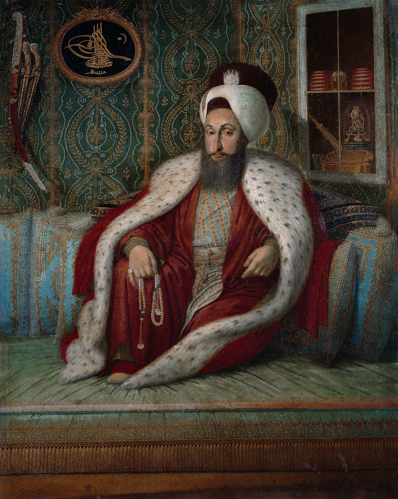
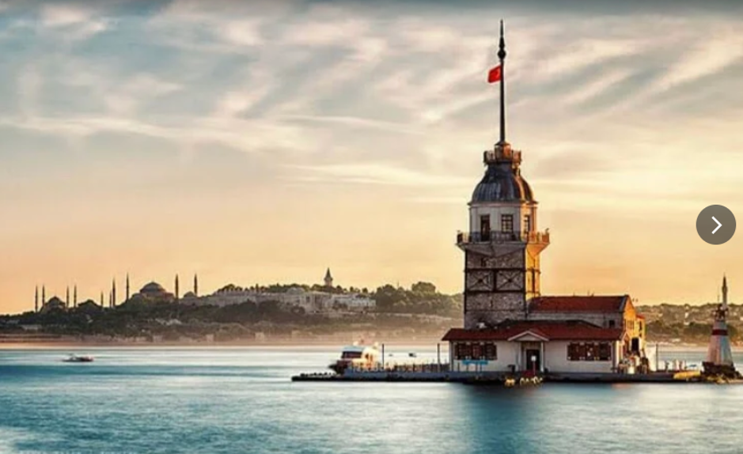
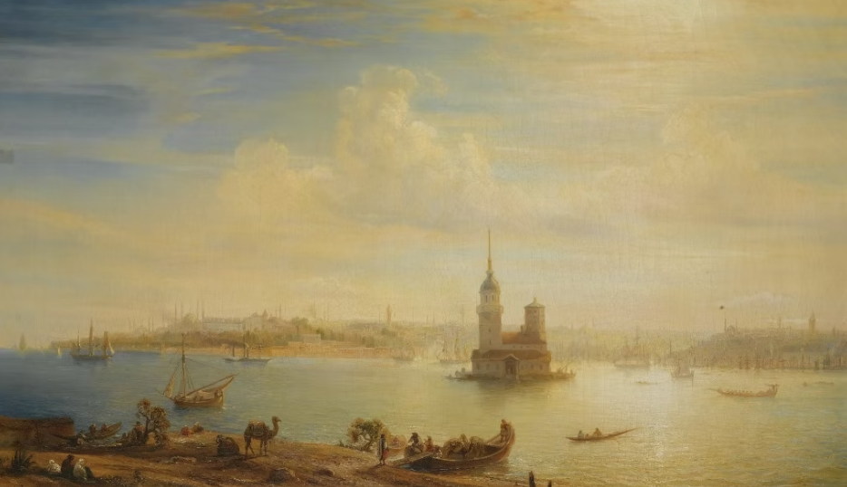
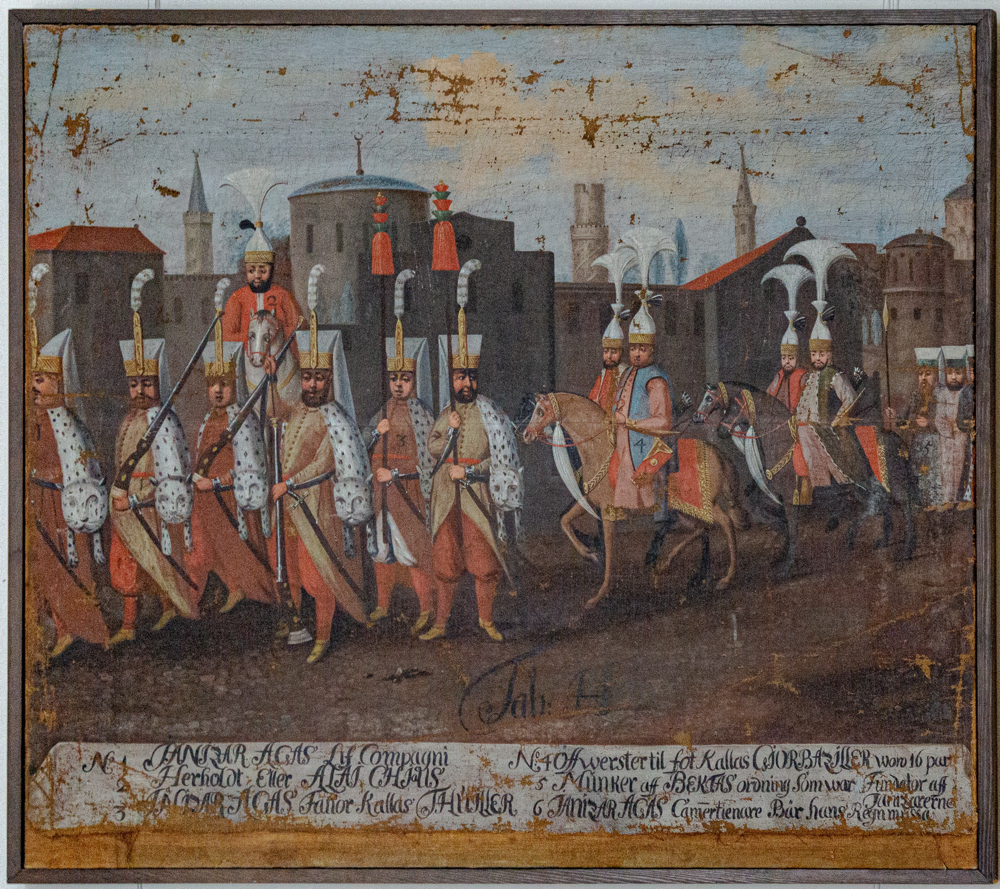
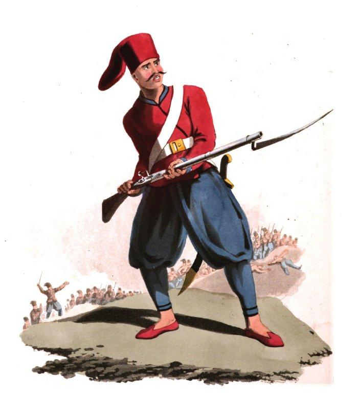
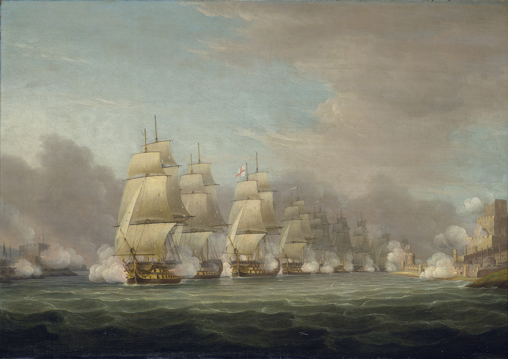
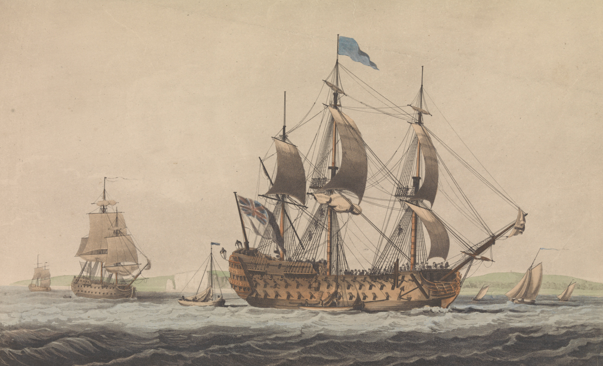
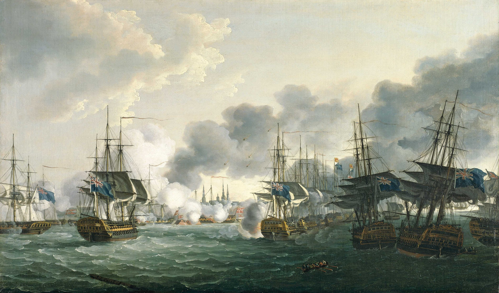

이스탄불 여행 (9) - 이스탄불 앞의 영국 함대
게시: 2026-01-08T06:30:56+09:00
2월 20일, 덕워쓰 함대는 아야 소피아가 보이는 이스탄불 앞바다에 드디어 도착했습니다. 1453년 콘스탄티노플이 함락된 이후, 허락받지 않은 기독교 세계의 군함이 아야 소피아 앞에 나타난 것은 무려 354년 만의 일이었습니다. 이스탄불을 오스만 투르크의 새로운 수도로 정했던 메흐메트 2세는 이런 날이 올 줄은 꿈에도 상상하지 못 했을 것입니다. 다다넬즈 해협의 요새들이 영국 함대를 막아세우지 못하자 술탄인 셀림 3세도 무척 당황했습니다. 그런 셀림 3세를 진정시킨 것은 나폴레옹이 파견한 프랑스 대사인 세바스티아니였습니다. 그가 권고한 것은 시간을 끌라는 것이었습니다. 원래 나폴레옹 휘하의 장군이었던 그는 저 정도 규모의 영국 함대가 이스탄불에 대해 퍼부을 수 있는 화력은 사실 그렇게까지 대단하지 않다는 것을 알고 있었습니다. 따라서, 영국 함대로서도 마치 요구 조건에 응할 것처럼 협상을 하자고 하면 거기에 응할 것이라고 생각했던 것입니다. 무엇보다, 3세기가 넘는 평화에 젖어 있던 이스탄불의 방어 태세는 아직 불충분했기 때문에 거기에 시간이 필요했습니다.

(술탄 셀림 3세입니다. 그는 쇠락해가던 오스만 투르크를 유럽식으로 개혁하려던 계몽 군주로 평가되지만, 결국 기득권 세력인 예니체리 군단의 반발에 의해 폐위되어 살해됩니다. 이 초상화는 그리스계 오스만 투르크 궁정 화가인 콘스탄틴 카피다을르(Konstantin Kapıdağlı)의 작품입니다.) 원래 금각만에 있던 테르사네(Tersane, 조선소)와 베이올루(Beyoğlu, 금각만을 사이에 두고 이스탄불 구시가지와 마주 보는 지역)에 있던 토파네(Tophane, 무기공장)의 방어 준비를 담당했던 세바스티아니는 다른 지점들의 방어 준비도 서둘러 감독했습니다. 그는 이스탄불은 물론 보스포러스 해협에 이미 있던 여러 요새들의 상태를 점검하고 보완했는데, 가령 이스탄불 앞바다의 작은 섬에 있던 처녀의 탑(Kız Kulesi, 크즈 쿨레시)을 허물고 거기에 포대를 만들자고도 했습니다. 오스만 투르크 관리들은 그런 유서 깊은 건축물을 떄려부수자는 것에는 반대했으나, 세바스티아니의 말대로 그 탑에 임시 보루를 쌓고 포대를 설치했습니다.

(처녀의 탑, 영어로는 Maiden's Tower는 이스탄불에서 보스포러스 해협 유람선 탈 때 꼭 보게 되는 명소입니다. 원래 전설에는 비잔틴 제국의 어느 공주가 15살인가 18살인가 아무튼 몇 살 되기 전에 독사에 물려 죽을 것이라는 점장이의 말을 들은 황제가, 아끼는 공주를 보호하기 위해 이 섬에 탑을 짓고 공주를 여기에 가두어 놓고 키웠다는 것에서 시작합니다. 모든 예언이 다 그렇듯이, 결국 공주는 독사에 물려 죽습니다. 바로 그 15살인지 18살인지가 되던 생일날 아침, 사랑하는 공주를 이제 거기서 풀어줄 수 있다고 기뻐하는 황제가 공주의 생일 선물로 포도 바구니를 탑에 보내주었는데, 바로 그 바구니 안에 독사가 숨어있었다는 이야기지요.)

(이 그림은 1856년 경 그려진 처녀의 탑 모습입니다.)
한편, 갑자기 나타난 외국 함대의 모습에 당연히 시민들은 공포에 떨었습니다. 저 영국 함대가 곧 이스탄불을 공격할 것이라는 예측과 함께, 이건 세상의 종말이 다가온 것이며 곧 마흐디(Mahdi, 구세주)가 나타날 것이라는 소문까지 돌았습니다. 일부에서는, 특히 예니체리 용병들이 운영하는 커피하우스에서는 '이건 술탄 셀림 3세가 신식군대인 니자므 제디드(Nizam-ı Cedid)를 키우고 기존의 예니체리 군단을 폐지하려고 영국 함대를 끌어들인 것이다'라는 음모론도 돌았습니다. 그러나 시민들을 가장 겁에 질리게 한 이야기는 곧 이교도인 영국 수병들이 이스탄불에 침입하여 상점을 약탈하고 여자들을 강간할 것이라는 꽤 논리적이고 사실적인 예상이었습니다.

(예니체리 군단의 모습입니다. 이 그림은 17세기 후반에 그려진 것인데, 보시다시피 이미 예니체리 병사들은 머스켓 소총으로 무장하고 있습니다. 흔히 우리가 생각하는 것과는 달리, 오스만 투르크는 유럽보다 오히려 먼저 화약무기를 받아들이고 잘 활용했습니다. 그래서 역사적으로 화약 제국(Gunpowder Empires)이라고 하면 유럽 제국을 말하는 것이 아니라 15~18세기의 이슬람 국가들, 즉 오스만 투르크와 사파비(Safavid) 페르시아, 무굴 제국을 뜻합니다. 한때 세계적 선진국이던 이슬람 국가들이 오늘날 쇠락한 모습을 보면 역사는 돌고 돈다는 것을 새삼 깨닫게 됩니다.)

(니자므 제디드 병사의 모습입니다. 니자므 제디드는 'New Order'라는 뜻인데, 이 신식군대는 구한말 임오군란 때처럼 결국 기득권 세력의 반발로 처참한 실패로 끝납니다. 국방 개혁이란 결국 경제사회적 개혁부터 시작되어야 하는 것이라는 것을 보여주는 전형적인 예입니다. 청나라 말기에 있었던, 기존의 경제사회적 제도는 그대로 유지하면서 단지 서양의 발달된 무기체계만 받아들이겠다는 양무운동이 실패한 것도 이와 비슷했습니다.) 바로 그런 공포심 때문에 여태까지 지지부진 진척이 없던 방어진지 공사가 삽시간에 진행되었습니다. 당시에도 이스탄불에는 그리스계나 아르메니아계 등 비(非)무슬림 시민들이 많이 살고 있었는데, 이들은 전투는 물론 방어진지 공사 같은 것에도 동원되지 않았습니다. 그러나 크리스천과 무슬림을 가릴 리가 없는 거친 영국 수병들의 약탈과 강간에 대한 소문이 돌자, 그리스 정교 사제들의 인도하에 그런 비무슬림 시민들까지 떼를 지어 자발적으로 해안가로 나와 방어진지 공사에 참여했고, 무기고에서 대포를 꺼내와 방열하는 작업을 도왔습니다. 이스탄불이 이렇게 난리를 일으킨 영국 함대 사령관 덕워쓰는 어떤 상황이었을까요? 이스탄불 시민들이 상상하던 것과는 달리 덕워쓰도 막막했습니다. 일단 여기까지 오는데 입은 피해가 결코 무시할 정도로 적은 편이 아니었습니다. 화재 사고로 상실된 HMS Ajax를 빼더라도, 다다넬즈 해협을 통과할 때 양안의 요새들로부터 받은 포격, 그리고 마스마라 해에서 오스만 함대 및 해안 요새와 교전할 때 얻어 맞은 포격이 꽤 되어 함선 여기저기에 손상을 입었고 인명 피해도 수십 명의 사망자와 그보다 더 많은 부상자를 낸 상태였습니다. 그런데 이제 저 웅장한 이스탄불을 눈 앞에 보고 있자니, '이제 어쩌지?'하는 생각에 한숨만 나왔습니다.

(덕워쓰 제독의 함대가 다다넬즈 해협에서 해안 요새들과 대포알을 주고 받으며 통과하는 모습입니다.) 세바스티아니의 판단처럼, 전열함 7척이 퍼부을 수 있는 화력은 같은 목조 전열함에 대해서야 막강했지만 성벽으로 둘러싸인 대도시를 상대로는 그다지 인상적이지 못했습니다. 게다가 성벽에 스크랫치라도 내려면 전열함이 성벽 수백 미터 앞까지 접근해야 했는데, 그러면 당연히 전열함도 성벽 위에 설치된 포대의 사정거리에 들어갔습니다. 지난 편에 설명한 것처럼, 지상 포대와 전열함의 대결은 전열함에게 무조건 불리했습니다. 당시의 전열함에는 WW2 당시의 전함들처럼 15인치 거포가 달린 것도 아니었고, 가장 큰 대포가 HMS Royal George에 실린 42파운드 함포였습니다. 그나마 전체 100문이었던 로열조지의 함포 중 42파운드 포는 30문이었고, 나머지는 24파운드 포 및 12파운드 포였습니다. 그에 비해 당시 오스만 투르크가 이스탄불에 배치한 해안포들도 18파운드부터 42파운드에 이르는 것들이었고, 구식 대포도 있었지만 상당수가 세바스티아니의 무기공장에서 만든 최신식 대포였습니다. 뿐만 아니라 다다넬즈 해협의 요새에 배치된 거포들 중에는 무려 800파운드 거포들도 있었습니다.

(당시 덕워쓰 제독의 기함이었던 HMS Royal George입니다. 1788년에 진수된 100문짜리 1급 전열함으로서 당시 영국 해군에서는 가장 큰 전열함 중 하나였는데, 그래봐야 길이 58m, 폭 16m으로서 요즘 기준으로는 포항급 초계함이던 천안함(PCC-772, 길이 88m, 폭 10m, 배수량 1200톤) 정도 되는 덩치입니다. 그렇게 작은 함체에 정원은 무려 850명 정도였습니다. 천안함은 100명 정도였지요.) 그렇다면 영국 해군성(Admiralty)에서는 대체 뭔 생각으로 달랑 전열함 8척을 이스탄불 앞바다에 밀어넣은 것이었을까요? 물론 여기엔 당시 영국 해군성을 지배하던 로열 네이비는 천하무적이고, 오스만 투르크는 동네북이라는 오만함도 있긴 했습니다. 특히 이 오만함에는 1801년 넬슨 제독이 승리했던 제1차 코펜하겐 전투도 한 몫을 했습니다. 당시 나폴레옹의 대륙봉쇄령에 맞서 영국도 중립국 선박에 대해서도 해상 봉쇄를 선언했는데, 그에 반발한 러시아 및 스웨덴, 덴마크 등이 무장중립을 선언하며 항행의 자유를 외치자 그를 진압하기 위해 넬슨 제독의 함대를 코펜하겐에 파견하여 전투를 벌인 후 굴복을 받아낸 사건이 제1차 코펜하겐 전투였습니다.

(제1차 코펜하겐 전투에 대해서는 https://nasica-old.tistory.com/6862508 를 참조하십시요.) 넬슨이 12척의 전열함만으로도 9척의 전열함을 갖춘 코펜하겐을 굴복시켰다면, 동네북이나 다름없는 오스만 투르크의 이스탄불 정도야 8척의 전열함으로도 충분할 것이라고 영국 해군성은 판단했던 것 같습니다. 그러나 그 코펜하겐 전투의 내용을 좀 더 자세히 보았다면 영국 해군성은 생각을 다시 해야 했을 것입니다. 당시 넬슨은 코펜하겐의 해안포대들과 포격전을 벌이며 승리를 거둔 것이 아니라, 코펜하겐 해변에 배치된 덴마크 전열함들과만 싸웠습니다. 그러고도 넬슨이 입은 피해는 매우 커서, 1200명의 사상자를 냈습니다. 게다가, 코펜하겐은 당시 인구 10만 정도의 아담한 항구 도시였습니다만 이스탄불은 인구 약 60만의 거대 도시였습니다. 그러니까 이스탄불은 인구 55만의 파리보다 큰 도시로서, 100만 인구의 런던보다는 작았지만 인구 17만의 베를린과는 비교가 되지 않을 정도의 메트로폴리스였습니다. 그리고 더 중요한 부분이 있었습니다. 넬슨은 코펜하겐을 굴복시키기 위해 전열함들만 끌고 간 것은 아니었습니다. 전열함의 대포로는 코펜하겐의 성벽에 흠집 정도 밖에 낼 수 없다는 것을 다들 잘 알고 있었으니까요. 그에겐 7척의 박격포함도 있었습니다. 그러니까 원래 계획은 먼저 덴마크 전열함들을 제압한 뒤에, 이 박격포함들을 이용하여 좁은 코펜하겐 시내에 소이탄과 폭발탄을 쏘아붙일 생각이었던 것입니다. 덕워쓰에게도 박격포함이 있지 않았던가요? 있었습니다만, 문제가 있었습니다. 무슨 문제였을까요? (보스포러스 해협 항행권에 대한 역사 이야기를 간단히 쓰려던 것인데, 쓰다 보니 이야기가 점점 길어지네요. 완전 분량 실패입니다 T.T)